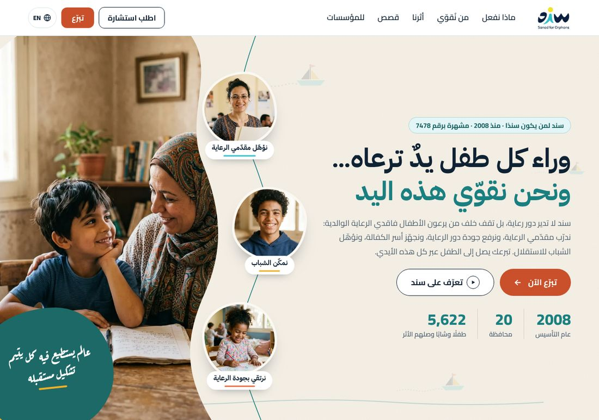
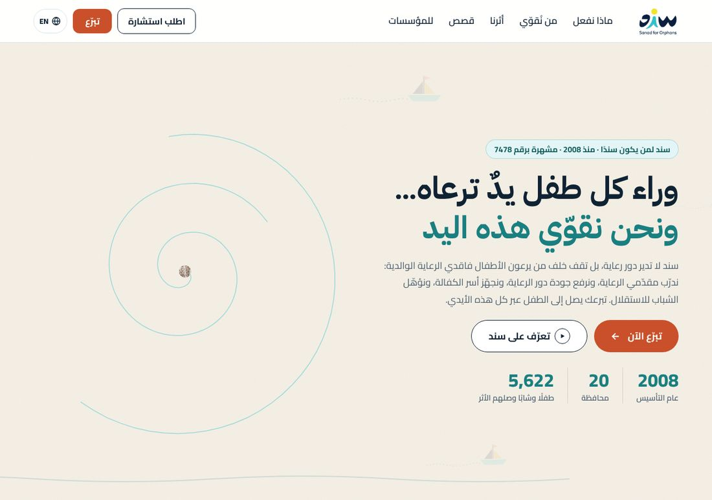
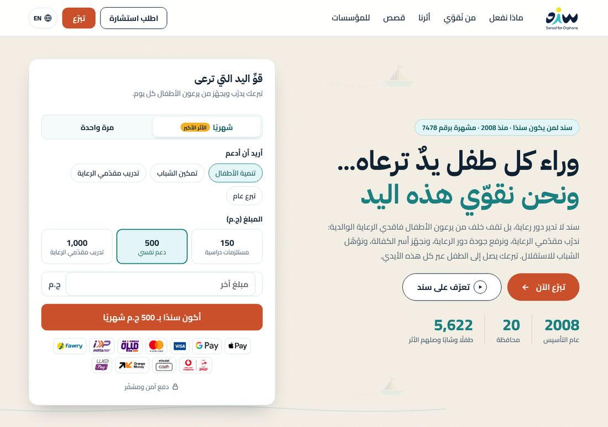
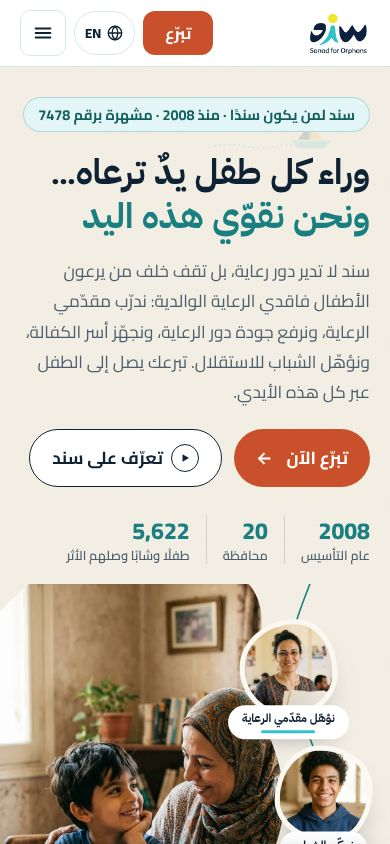
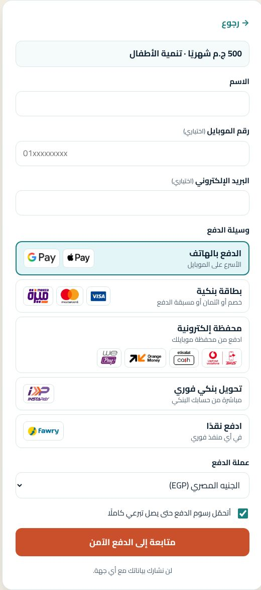

Contents · المحتوىPart 1: Arabic · الجزء الأول: العربية Part 2: English · الجزء الثاني: الإنجليزية
Findings · الملاحظات23 + 8 fixed · أُصلح
الجزء الأول: العربية
تدقيق تجربة المستخدم والواجهة للصفحة الرئيسية
قراءة نقدية من موقع «محامي الشيطان» قبل إرسال التصميم إلى سند
إعداد فريق التصميم · 21 أكتوبر 2026 · النموذج: https://sanad-redesign.vercel.app
الملخص التنفيذي
التصميم قوي بصريًا ومسار التبرع واضح، لكنه في صورته الحالية يحمل مخاطر قد تجعل سند تعترض عليه أو تفقد الثقة فيه. أخطر ما فيه أربع نقاط حرجة: وعود دفع أكبر من قدرات سند، وصور مولّدة لأطفال بلا إشارة، وجملة تموضع ليست بكلمات سند، وحذف الزكاة دون موافقتها. لا نوصي بإرسال التصميم قبل حسم النقاط الحرجة أو عرضها على سند صراحة كقرارات مفتوحة.
4حرج
7مرتفع
8متوسط
4منخفض
8أصلحناه أثناء التدقيق
قبل الإرسال، يجب حسم:
C1 وسائل الدفع والوعود في النموذج أكبر مما تقدمه سند فعليًا
C2 صور مولّدة بالذكاء الاصطناعي لأطفال ومستفيدين بلا أي إشارة
C3 جملة التموضع الأساسية ليست بكلمات سند، وموقعها يناقضها جزئيًا
C4 حذف الزكاة قرار داخلي يعاكس الهدف الأول للعميل
المنهج والمصادر
راجعنا النموذج المنشور على سطح المكتب (1280px و1366×657) والجوال (390px)، بالعربية والإنجليزية وفي وضع «تقليل الحركة». شغّلنا فحص axe-core الآلي لإمكانية الوصول، وقسنا وزن الصفحة، وأعدنا الاختبارات الوظيفية. ثم قارنّا كل ادعاء وكل رقم في الصفحة بطلب العميل وبصفحة «من نحن» وبكامل محتوى موقع سند، وبحثنا السابق. تبنّينا عمدًا موقف من يبحث عن الأخطاء: كل ملاحظة هي ما قد يقوله فريق سند أو متبرع متشكك.
طلب العميل
«تعظيم التبرعات الفردية وجعل تصميم الموقع يتناسب مع تشجيع المتصفحين على التبرع وفقا للتوجهات الاستراتيجية الحالية لدى الجمعية. كذلك أن يكون التصميم عصري وجذاب وسهل التصفح والاستخدام وأن يتوافق مع الهوية البصرية الخاصة بجمعية سند.»
مطابقة طلب العميل
المتطلب
الحكم
الملاحظة
تعظيم التبرعات الفردية
جزئيًا
مسار التبرع قوي، لكن C1 وC4 وH1 وH2 قد تخفض التحويل أو تقوّض الثقة.
تشجيع المتصفحين على التبرع وفق التوجهات الاستراتيجية الحالية
جزئيًا
أهداف سند 2024–2030: الكفالة ومنع الارتداد، والرعاية اللاحقة، وقدرات الجمعيات، وكوادر جديدة. أغراض التبرع لا تعكسها مباشرة، والاستشارات مُهمَّشة (H7).
تصميم عصري وجذاب وسهل التصفح والاستخدام
مُحقق
مُحقق مع ملاحظات: الحركة (H8، M6) وموضع النموذج على الجوال (M5).
التوافق مع الهوية البصرية للجمعية
في خطر
في خطر: الألوان والخطوط واسم الشعار (H5).
الملاحظات حسب الخطورة
C1حرجالتبرع والدفع
وسائل الدفع والوعود في النموذج أكبر مما تقدمه سند فعليًا
ما وجدناه
يعرض النموذج Apple Pay وGoogle Pay وميزة والمحافظ الإلكترونية (فودافون كاش، اتصالات كاش، أورنج موني، WE Pay) وإنستاباي وفوري، وأربع عملات، وتبرعًا شهريًا تلقائيًا. (أزلنا وعد الإيصال وكل ذكر لواتساب، انظر قائمة ما أصلحناه.)
لماذا يهم
صفحة التبرع الحالية لدى سند تقبل البطاقات فقط عبر بوابة البنك التجاري الدولي (Mastercard Hosted Checkout)، ولا تذكر أي إيصال. إذا رأى العميل وعودًا لا يستطيع الوفاء بها فسيفقد الثقة في التصميم كله، وإذا أُطلقت كما هي فسيشعر المتبرع بالخداع عند الدفع.
الدليل
sanadorphans.org/donate/ ؛ شريط الثقة وخطوة الدفع في النموذج (الملحق، الصورة 5).
التوصية
نسأل سند عن خطة بوابة الدفع، ونعرض فقط الوسائل المتاحة يوم الإطلاق، ونعرض الباقي كخطة مستقبلية في عرض التسليم لا في الواجهة.
المسؤول
سند + الوكالة
C2حرجالمصداقية والصور
صور مولّدة بالذكاء الاصطناعي لأطفال ومستفيدين بلا أي إشارة
ما وجدناه
تسع صور مولّدة (أربع في البطل، أربع في «من نقوّي»، وصورة التحدي) تُظهر أطفالًا ومقدمي رعاية وأسرًا مصريين غير حقيقيين، وأُزيلت عبارة «صورة تعبيرية» بناءً على طلب المراجعة.
لماذا يهم
سند تبيع استشارات في سياسات حماية الطفل، وليس لديها سياسة منشورة للصور أو الموافقات. أي صحفي أو متبرع يكتشف أن «أطفال سند» مولّدون قد يتهم الجمعية بالتضليل، وهذا يمس جوهر مصداقيتها.
الدليل
site/assets/hero و site/assets/photos ؛ لا توجد صفحة سياسة صور على sanadorphans.org.
التوصية
قبل الإرسال: موافقة مكتوبة من سند على استخدامها، أو إعادة عبارة «صورة تعبيرية»، والأفضل استبدالها بصور حقيقية بموافقة أصحابها قبل الإطلاق.
المسؤول
سند
C3حرجالرسالة
جملة التموضع الأساسية ليست بكلمات سند، وموقعها يناقضها جزئيًا
ما وجدناه
في البطل: «سند لا تدير دور رعاية، بل تقف خلف من يرعون الأطفال»، وفي قسم «من نقوّي»: «لا ندير دور رعاية. نحن نقوّي كل من يحيط بالطفل». موقع سند لا يقول هذا في أي صفحة. عنوانه الرئيسي هو رؤيته «عالم يستطيع فيه كل يتيم تشكيل مستقبله».
لماذا يهم
موقع سند يصف عملًا مباشرًا أيضًا: منح دراسية ومعدات لخريجي الرعاية (رانيا)، وبرامج فرصة ومبادر للشباب، وإرشاد الأسر الكافلة قبل الكفالة وبعدها، وصفحة التبرع تقول إن التبرع «يموّل برامج تصل مباشرة إلى الأطفال والشباب». قد ترى إدارة سند أن الرسالة تُنقص من عملها المباشر.
نعرض الجملة على سند للاعتماد، أو نلطفها إلى «نقوّي المنظومة المحيطة بكل طفل»، ونضيف رؤية سند كسطر داعم في البطل.
المسؤول
سند + الوكالة
C4حرجالتبرع
حذف الزكاة قرار داخلي يعاكس الهدف الأول للعميل
ما وجدناه
حذفنا اختيار صدقة/زكاة وحاسبة الزكاة وزر الزكاة في الشريط المتحرك، وكل ذكر للزكاة، بتوجيه «بدون أي توجه ديني». هذا التوجيه لم يأتِ من سند.
لماذا يهم
صفحة سند الرئيسية وصفحة التبرع تقولان صراحة «زكاتك أو صدقتك أو تبرعك العام يموّل برامج…». موسم الزكاة ورمضان من أهم مواسم التبرع الفردي في مصر، والعميل طلب «تعظيم التبرعات الفردية». إذا اعترضت سند فسنبدو كمن غيّر استراتيجية جمع التبرعات دون إذن.
الدليل
sanadorphans.org/ar/ ، /ar/donate/
التوصية
نعرضه على سند كقرار مفتوح مع البديلين. الحل الأخف: جملة محايدة «تقبل سند أموال الزكاة» دون حاسبة.
المسؤول
سند
H1مرتفعالتحويل
على الشاشات الكبيرة لا يظهر نموذج التبرع عند فتح الصفحة
ما وجدناه
في نسخة البطل الحالية يظهر النموذج بعد التمرير بنحو شاشة كاملة، داخل التسلسل المثبّت. قبل ذلك كان النموذج ظاهرًا في الشاشة الأولى.
لماذا يهم
هذا يناقض مبدأ في بحثنا نفسه: «النموذج في الشاشة الأولى». الزائر الذي لا يمرّر لا يرى مبلغًا ولا نموذجًا، بل زر «تبرّع الآن» فقط. قد يجذب التسلسل الانتباه، لكنه يضيف خطوة قبل التبرع.
الدليل
الملحق، الصور 1 و2 و3 ؛ research/donation-ux-research.html
التوصية
نتفق مع العميل على قياس التحويل (اختبار A/B بين البطل المثبّت ونسخة يظهر فيها النموذج فورًا)، أو نضيف اختيار المبلغ مختصرًا في البطل.
المسؤول
الوكالة
H2مرتفعالتبرع
وصف المبالغ يناقض الرسالة ولا يتغير مع الغرض
ما وجدناه
150 ج.م «مستلزمات دراسية» و500 «دعم نفسي» خدمات مباشرة للطفل، بينما الرسالة تقول إن سند تقوّي من يرعاه. والأوصاف نفسها تظهر مع كل غرض، فمن يختار «تدريب مقدمي الرعاية» يرى 150 = مستلزمات دراسية.
لماذا يهم
الأوصاف موروثة من موقع سند كما هي، لكن تصميمنا يبرز التناقض. ولا يوجد أي أساس تكلفة يثبت أن المبلغ يشتري ما يُذكر.
الدليل
sanadorphans.org/ar/ (عنصر التبرع) ؛ النموذج في النموذج الأولي
التوصية
نطلب من سند ثلاثة أمثلة أثر لكل غرض مبنية على تكلفة البرامج، ونجعل الأوصاف تتغير مع الغرض.
المسؤول
سند
H3مرتفعالأرقام
صفحتنا صارت متسقة، لكن صفحات سند نفسها ما زالت متعارضة
ما وجدناه
صفحات سند تتعارض: 20 محافظة (الرئيسية والخدمات) مقابل 19 (صفحة الفريق والملف التعريفي)، و18 عامًا مقابل 16 (قصص النجاح) و15 (التقرير 2022–2023)، والملف التعريفي ما زال يذكر 265 دارًا و4,440 طفلًا. أصلحنا صفحتنا: صارت تقول «منذ 2008» وعام التأسيس بدل عدد السنوات، وتعتمد 20 محافظة كما في عدادات سند الحالية.
لماذا يهم
صفحتنا لم تعد تناقض نفسها، لكن المتبرع الذي يفتح صفحة فريق سند أو ملفها التعريفي سيجد 19 محافظة وأرقامًا أقدم.
أن تحدّث سند صفحة الفريق والملف التعريفي، وتعتمد ورقة أرقام واحدة بتاريخ «حتى …».
المسؤول
سند
H5مرتفعالهوية البصرية
ابتعاد عن الهوية البصرية لسند، وهو شرط صريح في طلب العميل
ما وجدناه
ألوان شعار سند: فيروزي #1EC0CA وأصفر #FFDA00. استخدمنا فيروزيًا قريبًا (#36C0CA) لكن كهرماني #F2B025 بدل الأصفر، وأضفنا المرجاني #C9502A للتبرع والكحلي. الخطوط أربع عائلات (Cairo وIBM Plex Sans Arabic وRoboto وAref Ruqaa). المركب مأخوذ من ملصقات حملة «رحلة تكمل رحلة» لا من الهوية الأساسية. والشعار المستخدم مكتوب عليه «Sanad for Orphans»، وموقع سند لا يستخدم هذا الاسم ويكتب «Sanad for Alternative Parental Care».
لماذا يهم
الطلب نصًا: «أن يتوافق مع الهوية البصرية الخاصة بالجمعية». هذا أسهل اعتراض يمكن أن يقدمه فريق التسويق في سند.
الدليل
sanad-slogn-off.svg ؛ متغيرات الألوان في site/index.html
التوصية
نطلب دليل الهوية، ونستبدل الكهرماني بالأصفر الرسمي، ونقدّم المرجاني كلون وظيفي للتبرع للموافقة، ونقلّص الخطوط إلى عائلتين، ونؤكد نسخة الشعار.
المسؤول
الوكالة + سند
H6مرتفعالقانون والثقة
نجمع بيانات شخصية بلا سياسة خصوصية
ما وجدناه
النموذج يطلب الاسم، ورقم الموبايل والبريد اختياريًا. روابط «سياسة الخصوصية» و«سياسة الاسترداد» و«حقوق المتبرع» في التذييل لا تؤدي إلى أي صفحة. وموقع سند نفسه بلا سياسة خصوصية (/privacy-policy تعطي 404).
لماذا يهم
قانون حماية البيانات الشخصية المصري (رقم 151 لسنة 2020) يجعل هذا خطرًا قانونيًا، والمتبرع الحذر يبحث عن هذه الروابط قبل الدفع.
خدمات الاستشارات ممثلة بزر واحد يقود إلى المكان الخطأ
ما وجدناه
سند تقدم 8 خدمات استشارية (استشارات المانحين والمسؤولية المجتمعية، التقييم المؤسسي، التدريب المعتمد من Pearson، دعم الأسر الكافلة، الرعاية اللاحقة، السياسات، المحتوى، الدراسات). زر «اطلب استشارة» يقود إلى قسم «شارك معنا» بلا نموذج وبلا قائمة خدمات.
لماذا يهم
الطلب يذكر «التوجهات الاستراتيجية الحالية لدى الجمعية»، والاستشارات خط إيراد استراتيجي. ستلاحظ سند أن زرها يقود إلى طريق مسدود.
الدليل
sanadorphans.org/ar/services/
التوصية
ربط الزر بصفحة الخدمات أو بنموذج طلب الاستشارة الحالي، وإضافة شريط مختصر بالخدمات للمؤسسات.
المسؤول
الوكالة
H8مرتفعإمكانية الوصول
حركة بلا وسيلة إيقاف، ونموذج لا يصل إليه مستخدم لوحة المفاتيح بسهولة
ما وجدناه
بعد إزالة زر «أوقف الحركة» صار شريط الشعارات يتحرك بلا توقف ولا يتوقف إلا بمرور الفأرة. وفي البطل المثبّت يبقى النموذج غير قابل للتركيز حتى يُمرَّر إليه، فمن يتنقل بزر Tab من أزرار البطل يتخطاه.
لماذا يهم
WCAG 2.2.2 تشترط وسيلة لإيقاف أي حركة تستمر أكثر من 5 ثوانٍ. وضع «تقليل الحركة» يعمل جيدًا، لكنه لا يغطي من لا يفعّله.
الدليل
فحص يدوي ؛ فحص axe-core آلي (0 مخالفات بعد الإصلاحات، لكنه لا يختبر هذين البندين)
التوصية
إعادة وسيلة إيقاف صغيرة أو إيقاف الشريط بعد دورة واحدة، وإضافة رابط تخطٍّ «انتقل إلى التبرع» في أول الصفحة.
المسؤول
الوكالة
M1متوسطالثقة
أقوى إشارات الثقة لدى سند غائبة
ما وجدناه
ما يظهر هو Pearson فقط. غائب: أول شهادة مهنية معتمدة دوليًا في المنطقة العربية (2012)، ومعايير جودة الرعاية التي اعتمدتها وزارة التضامن (2014، مع PwC)، والجوائز (أيقونة نجاح المرأة المصرية 2022، جائزة PDF للتميز 2020، مصر الخير 2019، الأمير محمد بن فهد 2017)، والمؤسِّسة عزة عبد الحميد، وتاريخ «وطنية» منذ 2008.
لماذا يهم
المتبرع الجديد يحتاج سببًا للثقة قبل الدفع، وهذه أسباب موثقة نمتلكها ولا نعرضها.
الدليل
/ar/awards ، /ar/achievements ، /ar/board-members
التوصية
شريط اعتمادات وجوائز مختصر قرب النموذج.
المسؤول
الوكالة
M2متوسطالشفافية
لا شيء يجيب عن «أين يذهب تبرعي؟»
ما وجدناه
حذفنا لوحة الشفافية لأنها كانت فارغة، وسند لا تنشر قوائم مالية؛ تقاريرها السنوية فنية فقط.
لماذا يهم
المتبرع الشهري تحديدًا يسأل هذا السؤال، وغيابه نقطة ضعف أمام المنافسين.
الدليل
/ar/annual-reports
التوصية
أن تنشر سند ملخصًا ماليًا مدققًا، ونضيف كتلة «كيف نستخدم تبرعك» عند توفره.
الإضافات المفعّلة مسبقًا تُعد نمطًا مظلمًا في أدلة جمع التبرعات الأخلاقية، وقد تزيد التراجع عند الدفع.
الدليل
النموذج، الخطوتان 1 و2
التوصية
إبقاء «شهريًا» افتراضيًا مع جملة تشرح السبب، وجعل خيار الرسوم غير مفعّل افتراضيًا.
المسؤول
الوكالة
M4متوسطالمحتوى
القصص لا تقول من هم أصحابها
ما وجدناه
رانيا ووجيه وسحر وعلاء كلهم خريجو رعاية، وسحر تعمل اليوم في سند كمنسقة تطوير دور الأيتام. الصفحة لا تذكر ذلك، و«كل القصص» لا يقود إلى صفحات سند العشر.
لماذا يهم
«من خريجة رعاية إلى منسقة في سند» أقوى دليل أثر لدينا، وهو غير مستخدم.
الدليل
/success-stories/{raniah,wageeh,sahar,alaa}
التوصية
سطر تعريفي لكل قصة، وربطها بصفحاتها الكاملة.
المسؤول
الوكالة
M5متوسطالجوال
نموذج التبرع بعيد على الجوال
ما وجدناه
على عرض 390px يأتي النموذج بعد النص ثم تكوين الصور، على بعد نحو 1,500px، ويعتمد الوصول إليه على شريط «تبرع الآن» الثابت.
لماذا يهم
معظم زيارات المواقع المصرية من الجوال، فالمسافة إلى النموذج تؤثر مباشرة على التحويل.
الدليل
الملحق، الصورة 4
التوصية
اختبار وضع النموذج قبل تكوين الصور على الجوال.
المسؤول
الوكالة
M6متوسطالأداء
ميزانية الحركة والخطوط ثقيلة لأجهزة متوسطة
ما وجدناه
بطل مثبّت ودخولات لكل قسم وحركات مستمرة. الخطوط 254 كيلوبايت، أي نحو 40% من وزن الصفحة (634 كيلوبايت على سطح المكتب، 665 على الجوال).
لماذا يهم
أجهزة أندرويد المتوسطة شائعة في مصر، والحركة الزائدة قد تبدو «استعراضية» لجمعية خيرية.
الدليل
قياس الشبكة في بيئة الاختبار ؛ الملحق «نتائج الفحص»
التوصية
تحديد ميزانية أداء، والاختبار على جهاز أندرويد متوسط حقيقي، وتقليص الخطوط.
المسؤول
الوكالة
M7متوسطالثقة
ادعاء الشراكات أقوى من الدليل
ما وجدناه
العنوان «تثق بنا الحكومة ووكالات الأمم المتحدة وكبرى الشركات» مع 69 شعارًا. نحو 30 شعارًا لم نستطع تحديد أصحابها، وصفحة الشركاء لدى سند فارغة.
لماذا يهم
ادعاء «ثقة وكالات الأمم المتحدة» يحتاج إذنًا وتأكيدًا من كل جهة.
الدليل
/ar/partners-network (فارغة)
التوصية
تخفيف العنوان إلى «شركاء الأثر»، والحصول على قائمة الشركاء وأذونات الشعارات.
المسؤول
سند
M8متوسطالتنقل
روابط لا تقود إلى أي مكان
ما وجدناه
الخدمات، كل القصص، الأخبار، التقارير السنوية، الوظائف، السياسات: كلها روابط داخلية مؤقتة (#). وتسمية «للمؤسسات» في القائمة تقود إلى «شارك معنا».
لماذا يهم
العميل سيضغط كل رابط في العرض.
الدليل
النموذج الأولي
التوصية
خريطة روابط كاملة إلى صفحات سند الحقيقية قبل الإرسال.
المسؤول
الوكالة
L1منخفضالدقة
«1.4 مليون يتيم» بلا «نحو»
ما وجدناه
سند تكتب «حوالي مليون يتيم» وتبدّل بين «يتيم» و«طفل بلا رعاية والدية».
لماذا يهم
فرق صغير، لكنه يظهر أمام خبراء الرعاية في سند.
الدليل
sanadorphans.org/ar/ (قسم التحدي)
التوصية
«نحو 1.4 مليون طفل بلا رعاية والدية في مصر».
المسؤول
الوكالة
L2منخفضالتقنية
اللغتان على عنوان واحد، والصفحة مستبعدة من محركات البحث
ما وجدناه
التبديل بين العربية والإنجليزية يتم بجافاسكربت على عنوان واحد، بلا /ar/ و/en/ ولا hreflang. والوسم noindex موضوع عمدًا للنموذج.
لماذا يهم
مقبول للنموذج، خطر عند الإطلاق.
الدليل
site/index.html
التوصية
عنوانان منفصلان مع hreflang في التنفيذ، وإزالة noindex.
المسؤول
الوكالة
L3منخفضالمحتوى
ترجمة الفيلم إنجليزية
ما وجدناه
فيلم «يعني إيه سند؟» عليه ترجمة إنجليزية محروقة في الصورة، والجمهور الأساسي عربي.
لماذا يهم
تفصيل يلاحظه العميل فورًا.
الدليل
youtube.com/watch?v=lNpo7sIex6s
التوصية
طلب نسخة بدون ترجمة أو بترجمة عربية.
المسؤول
سند
L4منخفضالمحتوى
نشرة بريدية بلا نشرة
ما وجدناه
التذييل يدعو للاشتراك في «نشرة سند»، وصفحة النشرات لدى سند فارغة، والنموذج غير مربوط بأي نظام.
لماذا يهم
وعد صغير غير منفّذ.
الدليل
/newsletters (فارغة)
التوصية
إخفاؤه حتى توجد نشرة فعلًا.
المسؤول
سند + الوكالة
أصلحناه أثناء التدقيق
(C1) لم يذكر موقع سند أي إيصال، فأزلنا كل وعود الإيصال وكل ذكر لواتساب: سطر «إيصال فوري على واتساب» في شريط الثقة وتحت زر التبرع، وسطر الإيصال في صفحة الشكر، وتلميحات الإيصال في الخانات، وبطاقة «حوّلت بالفعل؟»، وزر واتساب العائم، و«(واتساب)» في التذييل. صار رقم الموبايل اختياريًا، وحلّ رقم الإشهار محل الإيصال في شريط الثقة.
(H4) وصفنا رقم 1,921 بأنه «منظمة مجتمع مدني»، والأرجح أنه أفراد كما في ملف سند التعريفي. أصبح «كادرًا في المجتمع المدني»، مثل «كادرًا بوزارة التضامن» بجانبه، بانتظار تأكيد سند.
(H3) «18 عامًا» صارت «منذ 2008» وعام التأسيس في البطل وشريط الثقة ولوحة الأثر وقسم القصص، فلا تتعارض مع أي صفحة لسند. وثبّتنا 20 محافظة كما في عدادات سند الحالية.
لون نص زر «تبرّع الآن» في التذييل كان رماديًا على المرجاني (تباين 3.0:1). أصبح أبيض.
لوحات القصص كانت <article role="tabpanel"> وهو غير مسموح. أصبحت عناصر div.
زر واتساب العائم كان خارج أي منطقة معلّمة. أُزيل الزر لاحقًا مع كل ذكر لواتساب.
بعد الانتقال إلى الخطوة الثانية كان النموذج يتوقف جزئيًا تحت الشريط العلوي. يتوقف الآن تحته مباشرة.
تأثير الارتفاع عند المرور فوق بطاقات «من نقوّي» والأخبار كان معطلًا بسبب أنماط الظهور. يعمل الآن.
ما يعمل جيدًا
مسار تبرع واضح بخطوتين، بالأغراض الأربعة ذاتها التي يستخدمها موقع سند.
كل أرقام التحدي بمصادرها كما يذكرها موقع سند (اليونيسف 2014، SOS 2023، وزارة التضامن 2023).
القصص الأربع حقيقية من موقع سند، والدعوة «ساعد في كتابة القصة القادمة» تموّل تمكين الشباب، وهو ما ينطبق على أصحابها.
المحاور الثلاثة وبرامجها الخمسة منقولة من موقع سند بنصها.
الحسابات البنكية الثلاثة بأرقامها الصحيحة مع زر نسخ.
عربية أولًا مع نسخة إنجليزية كاملة، وتعمل على كل العروض، ووضع «تقليل الحركة» يعرض كل شيء ثابتًا.
فحص axe-core الآلي: صفر مخالفات على سطح المكتب والجوال بعد الإصلاحات.
قرارات مطلوبة من سند
هل تريد سند إبراز الزكاة في الموقع؟ (C4)
ما وسائل الدفع المتاحة يوم الإطلاق؟ (C1)
هل يمكن إرسال إيصال تبرع، وبأي وسيلة؟ أزلنا الوعد حتى تؤكد سند. (C1)
هل توافق سند على الصور المولّدة؟ وهل لديها صور حقيقية بموافقات؟ (C2)
هل تعتمد سند جملة «سند لا تدير دور رعاية…»؟ (C3)
ورقة أرقام واحدة معتمدة بتاريخ، مع تأكيد أن 1,921 أفراد لا منظمات. (H3)
أمثلة أثر لكل غرض تبرع مبنية على التكلفة. (H2)
دليل الهوية البصرية ونسخة الشعار المعتمدة. (H5)
أين يجب أن يقود زر «اطلب استشارة»؟ (H7)
سياسة الخصوصية وسياسة الاسترداد. (H6)
قائمة الشركاء وأذونات استخدام الشعارات. (M7)
ملحق: صور ونتائج الفحص

1 البطل على سطح المكتب بعد انتهاء الحركة الافتتاحية

2 منتصف التمرير: الصور تدور بعيدًا والنموذج يتفتح من المركز

3 النموذج مكتمل الظهور داخل البطل المثبّت

4 الجوال (390px): النص أولًا ثم الصور

5 الخطوة 2: وسائل الدفع المعروضة
نتائج الفحص
فحص axe-core 4.10 على الموقع المنشور قبل الإصلاحات: مخالفة خطيرة واحدة (تباين)، وأخرى متوسطة (منطقة معلّمة)، وثالثة بسيطة (دور ARIA).
بعد الإصلاحات: صفر مخالفات على 1280px و390px.
وزن الصفحة المنشورة: 634 كيلوبايت على سطح المكتب (51 طلبًا)، و665 كيلوبايت على الجوال. منها: الصور 330–361، والخطوط 254، والمستند 45 كيلوبايت.
اختبارات وظيفية آلية بالعربية والإنجليزية على 1280px و390px: النموذج بخطواته الثلاث، وروابط التبرع، والفيلم، والقصص، وتبديل اللغة، ووضع «تقليل الحركة». كلها ناجحة بلا أخطاء في وحدة التحكم.
القياسات من بيئة اختبار سحابية وليست بديلًا عن اختبار جهاز حقيقي.
research/donation-ux-research.html (بحثنا السابق / our earlier research)
Part 2: English
Homepage UI/UX audit
A devil's-advocate review before the design goes to Sanad
Prepared by the design team · 21 October 2026 · Prototype: https://sanad-redesign.vercel.app
Executive summary
The design is visually strong and the giving flow is clear, but as it stands it carries risks that could lead Sanad to reject it or lose trust in it. The four critical points are: payment promises beyond what Sanad offers, generated photos of children with no label, a positioning line that isn't Sanad's wording, and dropping Zakat without Sanad's agreement. We don't recommend sending the design until the critical points are resolved or put to Sanad explicitly as open decisions.
4Critical
7High
8Medium
4Low
8Fixed during the audit
Must be settled before sending:
C1 The form promises payment options Sanad doesn't offer today
C2 AI-generated photos of children and beneficiaries carry no label
C3 The core positioning line isn't Sanad's wording, and its own site partly contradicts it
C4 Dropping Zakat was an internal call that works against the client's first goal
Method and sources
We reviewed the live prototype on desktop (1280px and 1366×657) and mobile (390px), in Arabic and English and with reduced motion. We ran an automated axe-core accessibility scan, measured page weight and re-ran the functional tests. Then we checked every claim and figure on the page against the client's brief, Sanad's About page, the whole of Sanad's website and our earlier research. We deliberately took the stance of someone looking for faults: each finding is what Sanad's team or a sceptical donor might say.
The client's brief
Maximise individual donations, and design the site to encourage visitors to give in line with the association's current strategic directions. The design should also be modern, attractive and easy to browse and use, and consistent with Sanad's visual identity. (Translated from the Arabic brief.)
Scorecard against the brief
Requirement
Verdict
Note
Maximise individual donations
Partly met
The giving flow is strong, but C1, C4, H1 and H2 could lower conversion or undermine trust.
Encourage visitors to give, in line with Sanad's current strategy
Partly met
Sanad's 2024–2030 goals are kafala and preventing relapse, aftercare, the capacity of associations and new qualified staff. The giving purposes don't map onto them directly, and consulting is sidelined (H7).
A modern, attractive design that is easy to browse and use
Met
Met, with caveats: motion (H8, M6) and the form's position on mobile (M5).
Consistent with Sanad's visual identity
At risk
At risk: colours, fonts and the name on the logo (H5).
Findings by severity
C1CriticalGiving and payment
The form promises payment options Sanad doesn't offer today
What we found
The form shows Apple Pay, Google Pay, Meeza, mobile wallets (Vodafone Cash, Etisalat Cash, Orange Money, WE Pay), InstaPay and Fawry, four currencies and automatic monthly giving. (We removed the receipt promise and every WhatsApp mention; see the fixed list.)
Why it matters
Sanad's live donate page takes cards only, through CIB's Mastercard hosted checkout, and promises no receipt. If the client sees promises it can't keep, it will doubt the whole design; if it launches as is, donors will feel misled at checkout.
Evidence
sanadorphans.org/donate/; the prototype's trust strip and payment step (appendix, image 5).
Recommendation
Ask Sanad for its gateway plan, show only the methods live on launch day, and present the rest as a roadmap in the handover deck rather than in the interface.
Owner
Sanad + agency
C2CriticalCredibility and imagery
AI-generated photos of children and beneficiaries carry no label
What we found
Nine generated images (four in the hero, four in "Who we strengthen" and the challenge photo) show Egyptian children, caregivers and families who don't exist. The «صورة تعبيرية» labels were removed at review.
Why it matters
Sanad sells child-safeguarding policy consulting and publishes no photo or consent policy. A journalist or donor who discovers that "Sanad's children" are synthetic could accuse the organisation of misleading the public, which goes to the heart of its credibility.
Evidence
site/assets/hero and site/assets/photos; sanadorphans.org has no photo or consent policy page.
Recommendation
Before sending: written approval from Sanad, or restore the «صورة تعبيرية» label. Best: replace them with real, consented photos before launch.
Owner
Sanad
C3CriticalMessage
The core positioning line isn't Sanad's wording, and its own site partly contradicts it
What we found
The hero says «سند لا تدير دور رعاية، بل تقف خلف من يرعون الأطفال» and "Who we strengthen" says «لا ندير دور رعاية. نحن نقوّي كل من يحيط بالطفل». Sanad's site never says this; its homepage headline is its vision, «عالم يستطيع فيه كل يتيم تشكيل مستقبله».
Why it matters
Sanad's site also describes direct work: scholarships and equipment grants for care leavers (Raniah), the Forsa and Mobader youth programmes, and kafala counselling before and after placement. Its donate page says gifts fund «برامج تصل مباشرة إلى الأطفال والشباب». Sanad's leadership may feel the line undersells its direct work.
Put the line to Sanad for approval, or soften it to "we strengthen the whole system around every child", and add Sanad's vision as a supporting line in the hero.
Owner
Sanad + agency
C4CriticalGiving
Dropping Zakat was an internal call that works against the client's first goal
What we found
We removed the Sadaqah/Zakat choice, the Zakat calculator, the mobile Zakat button and every mention of Zakat, following a "no religious direction" instruction. That instruction didn't come from Sanad.
Why it matters
Sanad's homepage and donate page say outright «زكاتك أو صدقتك أو تبرعك العام يموّل برامج…». Zakat and Ramadan are among the most important individual-giving seasons in Egypt, and the brief asks to "maximise individual donations". If Sanad objects, we'll look as if we changed its fundraising strategy without asking.
Evidence
sanadorphans.org/ar/, /ar/donate/
Recommendation
Present it to Sanad as an open decision with both options. A lighter middle path: one neutral line, "Sanad accepts Zakat", without the calculator.
Owner
Sanad
H1HighConversion
On desktop the donation form isn't visible when the page opens
What we found
In the current hero the form appears only after about one full screen of scrolling, inside the pinned sequence. Before, it was visible in the first screen.
Why it matters
It contradicts a principle in our own research: "the form in the first screen". A visitor who doesn't scroll sees no amount and no form, only the "Donate now" button. The sequence may win attention, but it adds a step before giving.
Evidence
Appendix, images 1, 2 and 3; research/donation-ux-research.html
Recommendation
Agree with the client to measure it: an A/B test between the pinned hero and a version with the form visible at once. Or add a compact amount picker to the hero.
Owner
Agency
H2HighGiving
Amount captions contradict the message and don't change with the purpose
What we found
EGP 150 for «مستلزمات دراسية» and 500 for «دعم نفسي» are direct services to a child, while the message says Sanad strengthens those who care for children. The same captions appear for every purpose, so choosing «تدريب مقدمي الرعاية» still shows 150 = school supplies.
Why it matters
The captions come straight from Sanad's site, but our design makes the contradiction more visible. Nothing shows that each amount actually buys what it says.
Evidence
sanadorphans.org/ar/ (donation widget); the prototype's form
Recommendation
Ask Sanad for three impact examples per purpose, based on programme costs, and make the captions change with the purpose.
Owner
Sanad
H3HighFigures
Our page is now consistent, but Sanad's own pages still disagree
What we found
Sanad's pages disagree: 20 governorates (homepage and services) vs 19 (team page and portfolio); 18 years vs 16 (success stories) and 15 (2022–23 report); and the portfolio still shows 265 homes and 4,440 children. We fixed our page: it now says "since 2008" and shows the founding year instead of a count of years, and uses 20 governorates as on Sanad's current homepage counters.
Why it matters
Our page no longer contradicts itself, but a donor who opens Sanad's team page or portfolio will still find 19 governorates and older figures.
Sanad updates its team page and portfolio, and approves one figures sheet with an "as of" date.
Owner
Sanad
H5HighVisual identity
Drift from Sanad's visual identity, an explicit requirement in the brief
What we found
Sanad's logo colours are teal #1EC0CA and yellow #FFDA00. We use a close teal (#36C0CA) but amber #F2B025 instead of the yellow, and added coral #C9502A for giving, plus navy. There are four font families (Cairo, IBM Plex Sans Arabic, Roboto, Aref Ruqaa). The boat comes from the "رحلة تكمل رحلة" story-poster campaign, not the core identity. The logo file reads "Sanad for Orphans", a name Sanad's site never uses; it writes "Sanad for Alternative Parental Care".
Why it matters
The brief says it must «يتوافق مع الهوية البصرية الخاصة بالجمعية». This is the easiest objection for Sanad's marketing team to raise.
Evidence
sanad-slogn-off.svg; colour variables in site/index.html
Recommendation
Ask for the brand guidelines, switch amber to the official yellow, present coral as a functional donate colour for approval, cut the fonts to two families and confirm the logo lockup.
Owner
Agency + Sanad
H6HighLegal and trust
We collect personal data with no privacy policy
What we found
The form asks for a name, and optionally a mobile number and email. The footer's privacy, refund and donor-rights links go nowhere. Sanad's own site has no privacy policy either (/privacy-policy returns 404).
Why it matters
Egypt's Personal Data Protection Law (No. 151 of 2020) makes this a legal risk, and careful donors look for these links before paying.
Evidence
The prototype's footer; sanadorphans.org/privacy-policy (404)
Recommendation
Draft a privacy policy and a refund policy before launch.
Owner
Sanad (legal)
H7HighStrategy
Consulting services come down to one button that lands in the wrong place
What we found
Sanad sells 8 consulting services: donor and CSR advisory, institutional assessment, Pearson-accredited training, kafala family support, aftercare, policy, conference content and studies. The "Request a consultation" button leads to "Get involved", which has no form and no list of services.
Why it matters
The brief mentions Sanad's "current strategic directions", and consulting is a strategic revenue line. Sanad will notice that its button leads to a dead end.
Evidence
sanadorphans.org/ar/services/
Recommendation
Link the button to the services page or Sanad's existing consultation form, and add a compact services strip for organisations.
Owner
Agency
H8HighAccessibility
Motion with no way to stop it, and a form keyboard users can't easily reach
What we found
Since the pause button was removed, the logo strip moves endlessly and stops only on mouse hover. In the pinned hero the form can't take focus until it's scrolled into view, so someone tabbing from the hero buttons skips past it.
Why it matters
WCAG 2.2.2 requires a way to pause anything that moves for more than 5 seconds. Reduced-motion mode works well, but it doesn't cover people who haven't turned it on.
Evidence
Manual check; automated axe-core scan (0 violations after fixes, but it doesn't test these two)
Recommendation
Bring back a small pause control or stop the strip after one cycle, and add a "Skip to donation" link at the top of the page.
Owner
Agency
M1MediumTrust
Sanad's strongest trust signals are missing
What we found
Only Pearson appears. Missing: the first internationally accredited professional certificate in the Arab region (2012), care quality standards adopted by the Ministry of Social Solidarity (2014, with PwC), the awards (Egyptian Woman Icon of Success 2022, PDF Award of Excellence 2020, Masr ElKhair 2019, Prince Mohammed bin Fahad 2017), founder Azza Abdel Hamid, and the Wataneya history since 2008.
Why it matters
A new donor needs a reason to trust before paying, and these are documented reasons we have but don't show.
Evidence
/ar/awards, /ar/achievements, /ar/board-members
Recommendation
A compact credentials and awards strip near the form.
Owner
Agency
M2MediumTransparency
Nothing answers "where does my money go?"
What we found
We removed the transparency panel because it was empty, and Sanad publishes no financial statements; its annual reports are technical only.
Why it matters
Monthly donors in particular ask this, and its absence is a weak spot against competitors.
Evidence
/ar/annual-reports
Recommendation
Sanad publishes an audited financial summary, and we add a "How we use your gift" block once it exists.
Owner
Sanad
M3MediumConversion
Default choices that may feel pushy
What we found
"Monthly" is preselected with an unproven "Most impact" badge, and "I'll cover the payment fee" is pre-ticked.
Why it matters
Pre-ticked add-ons count as a dark pattern in ethical fundraising guidance, and they can increase drop-off at checkout.
Evidence
The form, steps 1 and 2
Recommendation
Keep monthly as the default with a line explaining why, and leave the fee option unticked by default.
Owner
Agency
M4MediumContent
The stories don't say who their people are
What we found
Raniah, Wageeh, Sahar and Alaa are all care leavers, and Sahar now works at Sanad as a coordinator in orphanage development. The page doesn't say so, and "All stories" doesn't lead to Sanad's ten story pages.
Why it matters
"From care leaver to coordinator at Sanad" is the strongest proof of impact we have, and it's unused.
Evidence
/success-stories/{raniah,wageeh,sahar,alaa}
Recommendation
Add one line per story on who the person is, and link to the full story pages.
Owner
Agency
M5MediumMobile
The donation form sits far down on mobile
What we found
At 390px the form comes after the copy and then the photo composition, about 1,500px down. Reaching it depends on the sticky "Donate now" bar.
Why it matters
Most visits to Egyptian sites come from phones, so the distance to the form directly affects conversion.
Evidence
Appendix, image 4
Recommendation
Test placing the form before the photo composition on mobile.
Owner
Agency
M6MediumPerformance
The motion and font budget is heavy for mid-range phones
What we found
A pinned hero, an entrance for every section and continuous motion. Fonts weigh 254 KB, about 40% of the page (634 KB on desktop, 665 KB on mobile).
Why it matters
Mid-range Android phones are common in Egypt, and too much motion can look showy for a charity.
Evidence
Network measurement in the test environment; appendix "Test results"
Recommendation
Set a performance budget, test on a real mid-range Android phone and cut the fonts down.
Owner
Agency
M7MediumTrust
The partnership claim is stronger than the evidence
What we found
The headline says "Trusted by government, UN agencies and leading companies" over 69 logos. We couldn't identify about 30 of them, and Sanad's partners page is empty.
Why it matters
Claiming "UN agencies trust us" needs permission and confirmation from each one.
Evidence
/ar/partners-network (empty)
Recommendation
Soften the headline to "Impact partners", and get the partner list and logo permissions.
Owner
Sanad
M8MediumNavigation
Links that lead nowhere
What we found
Services, all stories, news, annual reports, careers and policies are all placeholder in-page links (#). The "For organisations" nav item leads to "Get involved".
Why it matters
The client will click every link in the demo.
Evidence
The prototype
Recommendation
Map every link to Sanad's real pages before sending.
Owner
Agency
L1LowAccuracy
"1.4 million orphans" without "about"
What we found
Sanad writes «حوالي» (about) and switches between "orphan" and "child without parental care".
Why it matters
A small difference, but Sanad's care experts will spot it.
Evidence
sanadorphans.org/ar/ (challenge section)
Recommendation
"About 1.4 million children without parental care in Egypt".
Owner
Agency
L2LowTechnical
Both languages share one URL, and the page is excluded from search engines
What we found
Switching between Arabic and English happens in JavaScript on one URL, with no /ar/ and /en/ and no hreflang. The noindex tag is there on purpose for the prototype.
Why it matters
Fine for a prototype, a risk at launch.
Evidence
site/index.html
Recommendation
Separate URLs with hreflang in the build, and remove noindex.
Owner
Agency
L3LowContent
The film's subtitles are in English
What we found
The film «يعني إيه سند؟» has English subtitles burned into the picture, while the main audience is Arabic-speaking.
Why it matters
A detail the client will notice at once.
Evidence
youtube.com/watch?v=lNpo7sIex6s
Recommendation
Ask for a version with no subtitles or with Arabic subtitles.
Owner
Sanad
L4LowContent
A newsletter sign-up with no newsletter
What we found
The footer invites sign-ups to Sanad's newsletter, but Sanad's newsletters page is empty and the form isn't connected to anything.
Why it matters
A small promise that isn't kept.
Evidence
/newsletters (empty)
Recommendation
Hide it until a newsletter exists.
Owner
Sanad + agency
Fixed during the audit
(C1) Sanad's site never mentions a receipt, so we removed every receipt promise and every WhatsApp mention. That covers the "instant WhatsApp receipt" line in the trust strip and under the donate button, the receipt line on the thank-you step, the receipt hints in the fields, the "Already transferred?" card, the floating WhatsApp button and "(WhatsApp)" in the footer. The mobile number is now optional, and the registration number replaces the receipt in the trust strip.
(H4) We described 1,921 as "civil society organisations"; it's most likely people, as in Sanad's portfolio. It now reads "civil society staff", like the ministry-staff figure beside it, pending Sanad's confirmation.
(H3) "18 years" became "since 2008" and the founding year in the hero, trust strip, impact panel and stories section, so it can't conflict with any Sanad page. We kept 20 governorates, as on Sanad's current counters.
The footer's "Donate now" button had grey text on coral (contrast 3.0:1). It's white now.
Story panels were <article role="tabpanel">, which isn't allowed. They're divs now.
The floating WhatsApp button sat outside any landmark. The button was later removed along with every WhatsApp mention.
After moving to step 2, the form stopped partly under the header. It now lands just below it.
The hover lift on the "Who we strengthen" and news cards was overridden by the reveal styles. It works again.
What's working
A clear two-step giving flow, with the same four purposes Sanad's site uses.
Every challenge figure carries its source as Sanad's site gives it (UNICEF 2014, SOS 2023, MoSS 2023).
The four stories are real ones from Sanad's site, and the call "Help write the next story" funds youth empowerment, which fits who they are.
The three pillars and their five programmes are taken from Sanad's site word for word.
All three bank accounts with the correct numbers and a copy button.
Arabic first with a full English version, working at every width, and reduced-motion mode shows everything still.
Automated axe-core scan: zero violations on desktop and mobile after the fixes.
Decisions needed from Sanad
Does Sanad want Zakat featured on the site? (C4)
Which payment methods will be live on launch day? (C1)
Can Sanad send donation receipts, and how? We removed the promise until Sanad confirms. (C1)
Does Sanad approve the generated photos? Does it have real, consented photos? (C2)
Does Sanad approve the line «سند لا تدير دور رعاية…»? (C3)
One approved, dated figures sheet, confirming that 1,921 counts people, not organisations. (H3)
Cost-based impact examples for each giving purpose. (H2)
The brand guidelines and the approved logo lockup. (H5)
Where should "Request a consultation" lead? (H7)
A privacy policy and a refund policy. (H6)
The partner list and permission to use the logos. (M7)
Appendix: screenshots and test results
1 Desktop hero after the intro2 Mid-scroll: the photos swirl away and the form opens from the centre3 The form fully open inside the pinned hero4 Mobile (390px): copy first, then the photos5 Step 2: the payment methods shown
Test results
axe-core 4.10 on the live site before the fixes: one serious violation (contrast), one moderate (landmark) and one minor (ARIA role).
After the fixes: zero violations at 1280px and 390px.
Live page weight: 634 KB on desktop (51 requests) and 665 KB on mobile. Of that, images are 330–361 KB, fonts 254 KB and the document 45 KB.
Automated functional tests in Arabic and English at 1280px and 390px covered all three form steps, the donate links, the film, the stories, the language switch and reduced-motion mode. All passed with no console errors.
Measurements come from a cloud test environment and don't replace testing on a real device.